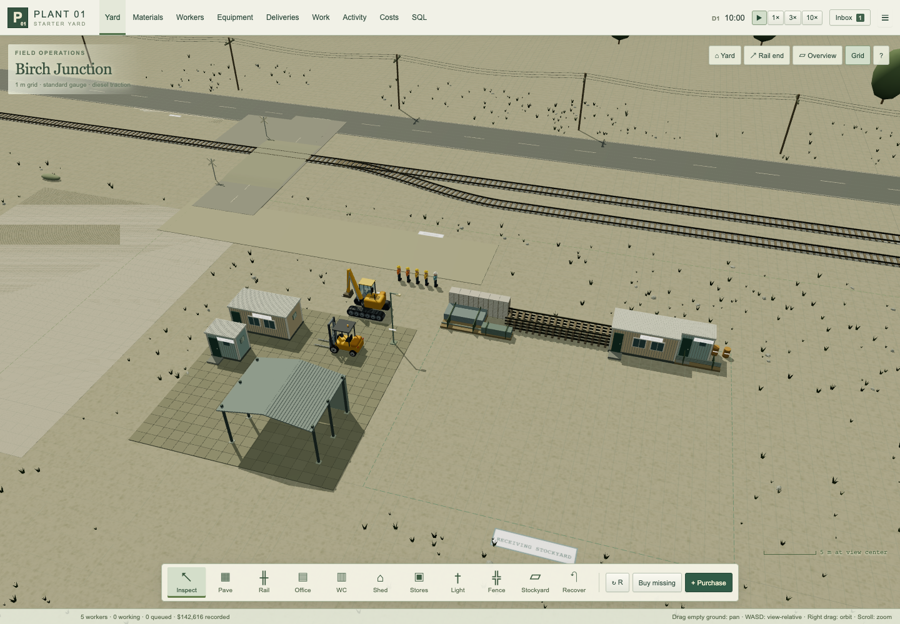
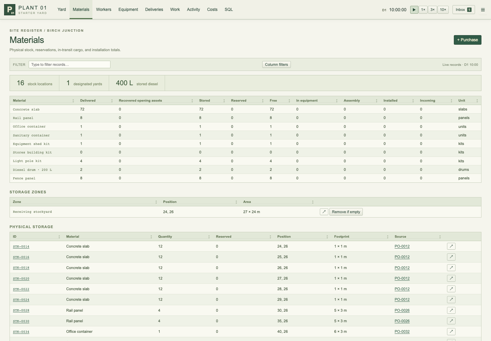
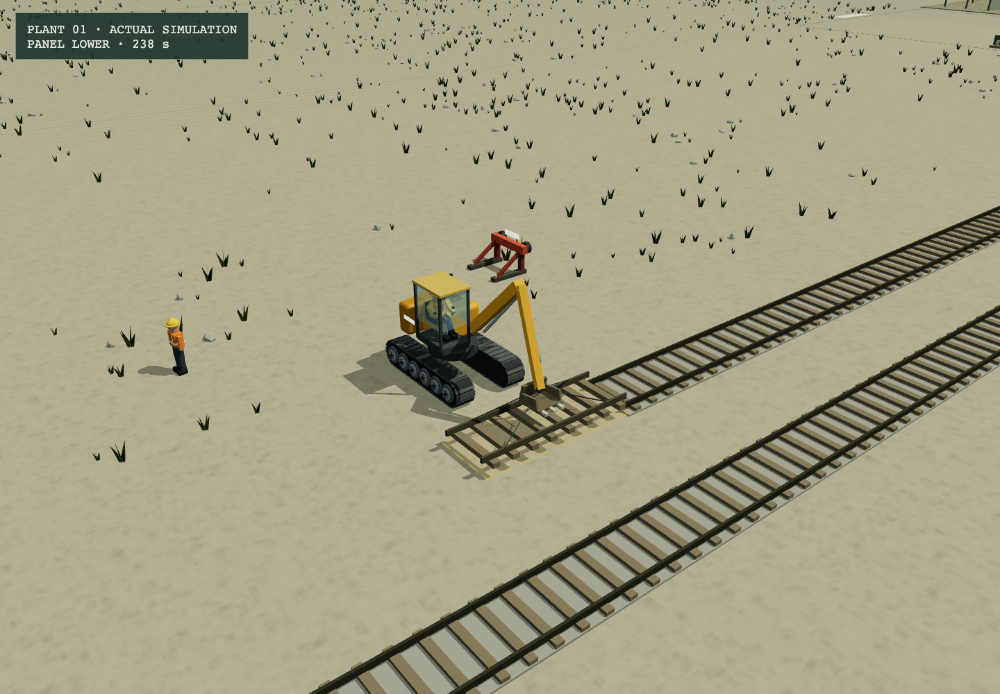

Build the starter yard
Bring people, equipment, and materials to an open industrial site. Give every piece a place, then watch the work happen.

The playable game. The camera can pan, orbit, and zoom.
Start a yard
Double-click Start Plant 01.command on this Mac. The included server opens the game in your browser. Keep its Terminal window open; Control-C stops the server. Normal play works offline.
| Starting option | What you receive |
|---|---|
| Start a new yard | Bare ground, the public road and railway, and an incoming starter order. |
| Start completely empty | The same ground and transport access. Choose every worker, machine, and material yourself. |
| Explore Birch Junction | An example base with opening assets, workers, machines, physical stock, and utility connections. |
The starter order hires two builders and one operator, buys an excavator, and orders 96 concrete slabs, six rail panels, an office, a sanitary container, a shed kit, three lights, and a 200 L diesel drum. Deliveries still have to arrive and unload.
No budget limit. The game records costs, commitments, wages, and material movements. Money does not prevent construction. People, machines, access, material, and time do.
Your first base
- Designate storage. Empty starts have no assigned stockyard. Choose Stockyard and drag an area, for example E24–51, S26–50. Keep a clear loading face and travel aisles. Slab stacks can fill neighboring cells; they do not require a gap around each stack.
- Order the essentials. Use Purchase if you started empty. Construction needs a builder or engineer, an operator, a machine with enough lifting capacity, and the specified material. The excavator can lift every starter kit; the forklift cannot lift an office or stores kit. Workers are named Worker #1, Worker #2, and so on.
- Deploy the delivered machine. A hired operator walks to its lowloader, goes up the lowered ramps, boards, and drives the machine onto the site. It is the same purchased asset throughout. Freight waits until a suitable machine and operator are available. Excavator unloading also needs a builder or engineer to rig the load.
- Plan an office. Choose Office and click clear ground outside the dashed stockyard boundary. E4, S32 is a useful starting position. Its 6 × 3 m foundation adds 18 paving jobs, followed by installation.
- Pave a working area. Choose Pave and drag a rectangle. One automatically assigned machine handles that work order across its cells. Separate orders can run in parallel. Every square meter consumes one delivered slab and a real hauling cycle. Plans remain outlines until the work is done.
- Build welfare and shelter. Place the WC/showers and an equipment shed. Foundations are planned automatically. Order water service for the sanitary container. The open shed allows equipment to be parked underneath. The crew lowers and unpacks its kit, bolts the base anchors, then lifts and fastens individual posts, roof frames, roof sections, wall panels, and bracing. The partly built structure stays visible and survives saving. Erection needs an excavator; the builder uses the kit's assembly ladder to reach high fastening points.
- Extend the track. Choose Rail end. Start at the existing buffer, E125, S5. Each placed panel is 5 m long. Leave space beside it: the excavator stages the panel, moves the released buffer aside, lays and joins the track, then replaces and fastens the same buffer as the connected extension advances.
Use Buy missing to order the material needed by your waiting plans. It subtracts usable stock and outstanding deliveries, so clicking it again does not duplicate the order. Choose 3× or 10× to watch longer jobs more quickly.
If a plan waits, select it or open Work. The blocking reason identifies the missing material, worker, operator, lifting capacity, fuel, foundation, or access route. Leave about 3 m of clear aisle for equipment. A planned structure can be canceled before work; delivered material remains yours.
Direct worker and equipment control
Select a worker in the world or locate them from the Workers register. Click Take direct control, then click a clear ground cell to walk there. A qualified operator can board a free machine: select the machine and click Board with selected operator. The operator walks over and gets in. Click clear ground to drive.
Select a waiting material or equipment delivery and choose Unload with controlled operator to assign the operator you control. For a machine still on a lowloader, this assigns its deployment. An automatic operator in another idle vehicle climbs down and walks over.
Select a waiting construction job and choose Work with controlled worker to prioritize that assignment. The other required crew members assist, using the same handling sequence as automatic jobs. Finish or cancel an assignment before manually moving its worker.
Return to automatic releases control. It does not reset the person's position, machine fuel, or cargo. The Workers inspector also offers a rest duty that prevents new automatic assignments. On-site wages continue while resting.
Assign vehicles to work
Open Equipment and change each vehicle's Automatic work selector. The same setting is available when you select a vehicle in the yard. To receive supplies while paving, check only Receiving deliveries for your forklift and only Paving for your excavator, with an operator for each machine.
Open the dropdown and check any combination of receiving deliveries, paving, building, rail work (excavator), and recovery / dismantling. All selects every kind; None holds new automatic work. Paving includes the foundations beneath buildings; Building covers installing the structure once its foundation is ready.
A role change lets the current job or unloading batch finish safely first. The selector
shows when that switch is pending. Direct driving, deployment, and refueling remain
available. Job assignments respect the role even when you choose their operator manually.
Selections are saved with the yard; older saves retain their original role. SQL exposes
the complete list in equipment.allowedWork and its readable summary in
equipment.automaticWork.
Work orders and urgent assignments
The Work register opens with active orders. Expand an office build to see its foundation and assembly, then expand the foundation to see individual slabs. Assign equipment to a whole order or any child task. Children inherit their nearest parent's assignment. An urgent assignment finishes the current load safely, then takes priority; it overrides automatic roles while retaining lift limits, staffing, fuel, and route requirements.
Parking and worker shifts
Select equipment and choose Choose bay in yard, then click a clear bay center. R rotates its direction; the inspector also accepts grid coordinates. An available operator boards and drives idle equipment to its bay. Shed posts and back walls remain solid; leave a clear approach.
Use Workers → Shift for preset hours or enter custom start/end hours in a worker inspector. Overnight shifts are supported. At shift end, workers finish current work, park equipment, exit, and walk to a charter bus. They return for their next shift by bus. Each charter costs $180 and is recorded in the ledger. Existing workers default to Always on. At 1×, the clock and physical operations run in real time. 3× and 10× accelerate both; wages and shift hours use the same clock.
Materials and deliveries
Stockyards exist only after you designate them, or in the supplied example yard. Their dashed outlines and labels are planning annotations, not installed signs or paint. They create no warehouse inventory or invisible capacity. Every stack has a footprint, a quantity, a source, and a maximum height. Up to 12 slabs occupy a 1 × 1 m stack, about 2.2 m high including handling spacers. Partial stacks are topped up before another cell is used, and adjacent usable cells can be filled. Rail panels retain their full 5 m length. Containers and kits occupy their own physical space.
In Purchase, enter each quantity and click Add to collect a batch. Different worker roles can share one bus; different material types can share one truck or train load. Choose Material transport to compare road and rail packing. The preview shows cargo weight, planned carriers, and total cost before Place batch order commits the request. The per-row Hire and Order buttons still order immediately.
Catalog rows show unit weight and quantity weight in kg or metric tons (t). A truck carries at most 12 t on a 6 m deck; a train load carries at most 48 t on a 16 m flatcar. Physical stack dimensions can fill the deck before its weight limit. Buses have 12 seats, and mixed roles share those seats. Equipment and utility services use dedicated road deliveries; selecting rail applies to materials. Each packed carrier has its own transport charge. The delivery charge pays for transport; it does not supply a free unloading machine.
Deliveries and their inspectors show the complete manifest, received quantity for each
item, and full cargo weight. Mixed cargo retains its original deck positions during
unloading. Saving preserves each line's progress; older single-item orders keep their
contents. SQL order_lines exposes those line quantities and weights for
analysis.
Road vehicles keep right. Buses stop at the curb and continue forward after everyone has stepped off. Freight and utility trucks back clear inside the yard, stop to change gear, then depart forward on the public road. Empty lowloaders use the western turning loop. Carriers take turns through the connecting yard maneuver; a parked delivery releases that right-of-way so its workers or handling equipment can arrive. Keep the receiving apron, exit aisle, and turning area clear.
Your own machine approaches the carrier, lifts a batch, backs clear, carries it to storage, lowers it, and withdraws. The operator stays in the cab. A 2.5 t forklift carries at most eight 280 kg slabs at once, so filling a 12-slab stack takes more than one lift. A partial or carried batch remains recorded through saving and loading.
A waiting delivery shows whether it needs an operator, a suitable machine, fuel, a rigger, storage capacity, or access. A free cell behind an unreachable loading face cannot be used until access exists. For more room, use Stockyard and drag another clear area; click once to designate a 12 × 12 m area. Leave access between storage and construction. Stored material is removed only when an assigned machine picks it up. Remove an empty stockyard designation from Materials when you want to build in that area.
The rigger walks toward unloading while the operator boards and approaches. An empty carrier can leave once its final parcel is lifted clear, while your machine still carries it to storage. The inspector shows when the carrier has left; the order finishes after the site placement is also complete.
Repeated equipment travel visibly compacts dirt. Routes prefer concrete or permanent hardstanding, then established dirt paths, then ordinary dirt when distance and turning costs are comparable. Marks persist in saves and stay below installed paving.
Paving a cell
The machine faces the slab stack and aligns its forks or sling with the actual top slab. It lifts, backs clear, carries the slab, then faces the planned cell before lowering it. Temporary runners support the slab while the machine withdraws; the builder removes them and sets the slab level. Once safely withdrawn, the machine can approach the next stack while the builder finishes this slab; it waits for a worker before the next lift. Keep room for the loading face, turns, and withdrawal. If access is blocked, work waits. Saving during a lift preserves the load and its position.
Recover and change the layout
Choose Recover and click an installed building, player-built rail, or paved cell. Crew dismantle or lift it, carry the recovered material, and place it back in physical storage. Space is required for the return. Prefab containers retain their asset IDs when installed elsewhere.
Straight track occupies two 1 m grid rows, one on each side of its gridline centerline, with 1,435 mm between the inner rail faces. Compact sleepers and ballast fit that footprint. Storage slots remain 5 × 3 m including handling clearance. Track plans automatically queue recovery for existing paving under their footprint. Recover a structure above paving before trying to lift that paving. The supplied public track and turnout are protected.
Rail laying starts by placing the delivered panel on temporary supports beside the extension. The builder releases the old buffer clamps; the excavator lifts the buffer aside, then retrieves and lowers the panel. After the joints are fastened, the machine brings that same buffer to the new end and the builder secures it. Leave room beside the track for the panel, buffer, and machine. Their positions and assignments survive a save during any stage of the operation.
Canceling a job before pickup releases its reservation. If a load has already been picked up, the machine deposits it at the planned site as a real stock item. Canceling work never makes its material vanish. Rail work first puts down suspended loads and secures the buffer; a panel already joined to the track remains installed. An imported older forklift rail job will stage its carried panel for an excavator and park clear. Existing installed track remains in place. The Work register explains when an excavator is needed to continue.
Fuel, lights, and utility services
Owned machines arrive with full tanks. Movement and lifting consume diesel. Low fuel produces a persistent notice. From Equipment, choose Refuel. A worker collects diesel from a delivered drum in a 20 L service can, walks to the stopped machine, and fills it. Repeated trips continue until the tank is full or the drum is empty.
A machine that runs dry during a job can be refueled and resume with its cargo intact. Fuel in a worker's can survives saving and loading. Stopping a refueling job after collection finishes the current can first. Empty drums remain in storage.
Purchase an electrical connection for lights and a water/sewer connection for the sanitary container. A utility crew arrives, works, and commissions the connection. This version represents the service at site level; individual pipe and cable installation is reserved for a later version. The day/night cycle changes the light, and connected yard lamps illuminate at night.
Dense records and SQL

Records are live, searchable, and linked back to the world.
| Register | Use it to |
|---|---|
| Materials | Reconcile delivered, stored, reserved, carried, installed, and incoming quantities; find each physical stack. |
| Workers | Inspect roles, duties, current action, assignments, on-site hours, and hourly rates. |
| Equipment | Check fuel, consumption, operator, cargo, assignments, and the structures/utility register. |
| Deliveries | See order status, quantities received, transport mode, ETA, assigned equipment and operator, handling phase, blocking reason, and purchase totals. |
| Work | Filter waiting, active, complete, or canceled jobs; inspect precise blocking reasons. |
| Activity | Follow the event log and every recorded material transfer. |
| Costs | Compare recorded actuals and unreceived commitments; export the cost ledger as CSV. |
| SQL | Run SELECT, WITH, or EXPLAIN against a fresh SQLite snapshot, using the included examples or your own query. |
The snapshot includes inventory, workers,
equipment, jobs, orders, stacks,
buildings, movements, costs, and
events. Queries cannot change the live simulation. Times are calendar
seconds, coordinates are meters, fuel is liters, and cost values are USD. Catalog prices
are provisional gameplay values.
Open Inbox to manage notices in To do, Doing, and Done. Closing a popup only hides it; it does not complete or erase the notice. Locate links jump to the associated person, object, order, or job.
Sorting, links, and diagnostics
Click any table header to sort. Use Column filters for individual columns or the general search for the register. Work retains its parent/child organization when sorted. Displayed asset and job IDs are clickable, including assigned workers, equipment, stock, and parent orders. Historical references show their retained material and cost trail.
The local rolling recorder captures actor positions, routes, blockers, cargo, commands, and work phases. When something looks wrong, use Activity → Export diagnostic history or the game menu. The export includes the current yard and up to four recent checkpoints. Recording stays on this device until exported; up to 18,000 records or 6 MB of entries are kept. If Activity reports Memory only, export before closing. Diagnostic exports are separate from ordinary save files.
Saves and backups
The game autosaves in this browser every 20 seconds. Use the menu or Ctrl/Cmd+S to save immediately. Export save downloads a portable JSON file. Import save validates it before replacing the current yard and resumes paused.
Starting another yard retains the old one as a browser backup. Restore previous yard swaps the current and previous yards. Browser storage is specific to the browser and the local URL, including the port. Export a file to transfer to another browser or keep a durable backup. The game does not advance while closed.
Version 4 saves preserve traffic waiting, yard right-of-way, gear changes, and the current deployment, unloading, or rail construction phase. Version 3 imports preserve materials and assignments. Moving road carriers map to their new arrival or departure route, and parked carriers move to the updated berth. This happens immediately, even while paused. Equipment and passengers still on the carrier move with it; machine IDs, ramp progress, and invoices are preserved.
Version 1/2 imports also preserve existing stock and accounting and give workers sequential names. Active older deliveries resume at a receiving point and wait for your own unloading resources. Any batch in the old carrier animation returns to its carrier instead of creating duplicate stock.
Controls at a glance
| Control | Action |
|---|---|
| Left click | Select, place, walk, or drive according to the current tool/control mode. |
| Left drag | With Inspect: grab empty ground to pan. With Pave or Stockyard: draw a rectangle. Short clicks still select, walk, or drive. |
| Middle drag / W A S D | Pan relative to the current view. W moves forward, A left, S backward, D right. |
| Right drag / mouse wheel | Orbit / zoom. |
| R / Esc | Rotate a placement / leave the current tool or close a panel. |
| Space / 1 2 3 | Pause or resume / set 1×, 3×, or 10× speed. |
| G / H / F | Grid / yard camera / follow controlled worker. |
| B / Ctrl or Cmd + S | Purchase / save. |
Select equipment to see its destination marker and accepted route in the yard. A dashed line shows the intended destination when no route is available; it is not a clear path. The inspector shows the current assignment phase, target coordinates, delivery or job note, and linked stock or blocking assets when known. Long curved panels can top up a partial stack using the actual loaded machine's clearance.
Traffic delays appear in the delivery note or equipment inspector. Keep the receiving apron and western turning area clear. Automatic workers step aside when needed, and an idle machine can move aside if its operator is seated and on automatic duty. Manually controlled or unoccupied machines wait for you to move them. Buses leave forward; trucks back clear of their berth before departing forward. Rail work can be saved during a lift. Canceling it secures the buffer and puts down any suspended load before releasing the crew.

Actual rail construction: the panel is being lowered, with the original buffer resting beside the track. Both remain physical assets throughout the operation.
Build curves and turnouts
Choose Rail end, then Straight, Curve or Turnout above the build bar. Start at E125, S5 facing east. Press R for a cardinal direction and use Left/Right for the bend. Click a connected endpoint; the preview shows actual track and occupied grid cells. Its bill lists quantities, weight and material cost before transport.
A 20 m radius quarter-turn uses six separately delivered 15° curved panels. A turnout is 20 m long with parallel exits 5 m apart: one points assembly, three through panels and three diverging panels, seven lifts in total. Buy missing orders the exact materials. The excavator and builder rig, stage, lay and fasten every piece, physically relocating the same buffer as needed. Leave ample access and staging space alongside.
Inspect a finished turnout's points module to request its manual Straight/Branch lever. An available worker walks to the lever and throws it; the route changes after the operation. Railway lists installed panels, endpoint connections and buffer protection. Canceled work can resume from its inspector while retaining its real installed and staged parts. Clear any new obstruction from its bed first.
The extra turnout exit is explicitly uncapped. Supplier trains continue on the original route. Test this railway construction checkpoint before approving the next chunk: a shunter, driver, engine shed and additional physical buffers; then tanks, tanker pumps, pipes, valves and gauges. New track assembly recovery remains a todo.
What comes after this version
This first version is a construction sandbox with a 232 × 98 m structure area and straight, curved and turnout buildable rail. Chemical production is intentionally absent. Owned shunters, train driving and shunting, individual utility networks, weather, seasons, machinery and component wear, repairs, kitchens, and emergency services remain future work.
Automatic jobs include lifting and fastening time, but individual boom joints and bolts are not manual controls. Buildings, stock, and carrier bounding rectangles affect routes. Road vehicles keep right and yield, with fixed arrival and departure routes. Machines check people and other vehicles while moving and turning. Steering and collision shapes are simplified; arbitrary road networks, rigid-body physics, and individual chain attachment are not yet simulated. Unloading uses your purchased machine and hired crew. Utility crews follow a simplified site-service sequence. Empty-container returns and canceling submitted supplier orders are not yet supported.
These boundaries keep the first playable yard coherent. They do not replace the larger design vision recorded in the project documents.